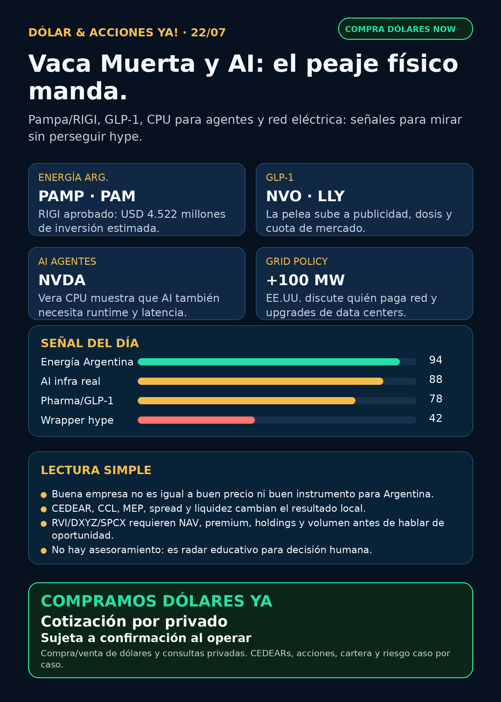

Vaca Muerta, GLP-1 y AI infra: hoy manda lo físico.
Pampa/RIGI fortalece energía argentina; NVIDIA muestra CPU para agentes; la red eléctrica ya entra en la cuenta de data centers.
Texto WhatsApp
Placa del día

Dólar & Acciones YA — 22/07
Fecha de edición: 2026-07-22. Research educativo para Argentina. No es recomendación personalizada de compra ni de venta.
Lectura simple del día
La señal fuerte de hoy viene de tres lugares distintos: energía argentina, pharma global y la infraestructura real que necesita la inteligencia artificial.
En criollo: AI no vive sólo en un modelo. Para que funcione hacen falta chips, CPU, red, electricidad, data centers, regulación y plata. Y desde Argentina hay otra capa: CEDEAR o acción directa, CCL implícito, MEP, liquidez, spread, comisiones y tamaño dentro de cartera.
Contexto dólar público fresco usado sólo como referencia educativa: BlueLytics marcó oficial vendedor ARS 1.498 y blue vendedor ARS 1.545 con update 2026-07-22 08:45 -03. CriptoYa marcó oficial ask ARS 1.500, blue ask ARS 1.545, USDT ask aproximado ARS 1.575, MEP AL30 ARS 1.514,64 y CCL AL30 ARS 1.547,69. Los MEP/CCL venían con timestamp de cierre previo; para operar de verdad se confirma en broker vivo.
Ordenado por valor educativo y fuerza de señal de radar, no por recomendación de compra.
Tesis central
No todo el trade energético pasa por data centers de Estados Unidos. Pampa Energía dejó una señal primaria fuerte en Argentina: Rincón de Aranda entró al RIGI con inversión estimada de USD 4.522 millones y exportaciones esperadas de USD 17.000 millones durante la vida del proyecto. Al mismo tiempo, la guerra GLP-1 entre Novo y Lilly muestra que pharma también se pelea en dosis, etiqueta y publicidad; NVIDIA refuerza que los agentes necesitan CPU/runtime y no sólo GPU; y la política energética de EE.UU. empieza a discutir quién paga el enchufe de data centers de más de 100 MW.
Señales educativas del día
1) Energía Argentina / Vaca Muerta / RIGI — Pampa Energía (PAM / PAMP)
- Qué pasó: Pampa informó vía SEC que el Ministerio de Economía aprobó la adhesión al RIGI del Proyecto Rincón de Aranda, calificado como Proyecto de Exportación Estratégica de Largo Plazo.
- Dato clave: bloque de 237 km² en Vaca Muerta, 259 pozos horizontales, planta de crudo de 45.000 barriles/día, planta de gas de 800.000 m³/día, inversión estimada de USD 4.522 millones hasta 2041 y exportaciones estimadas de USD 17.000 millones durante la vida del proyecto.
- Fuente primaria SEC: https://www.sec.gov/Archives/edgar/data/1469395/000129281426003834/ex99-1.htm
- Lectura en criollo: esto es energía argentina con capex, exportación y régimen fiscal. No es promesa abstracta: hay proyecto, escala y marco RIGI.
- Accionable local Argentina:
PAMPlocal puede ser vehículo de análisis; antes de decidir falta precio, liquidez, spread, CCL, comisiones y tamaño de posición. - Accionable internacional/global: ADR
PAM; también requiere valuación, petróleo/gas, ejecución, financiación y riesgo país. - Estado: señal fortalecida / vigilar ejecución, precio del crudo, RIGI y financiación.
2) Pharma / GLP-1 / competencia legal — Novo Nordisk (NVO) vs Eli Lilly (LLY)
- Qué pasó: Novo anunció demanda federal contra Lilly y Lilly USA por supuesta publicidad engañosa en Zepbound/Mounjaro frente a Wegovy/Ozempic.
- Dato clave: Novo alega comparaciones de dosis máximas de tirzepatide contra dosis inferiores o antiguas de Wegovy/Ozempic, y pide injunction permanente y campaña correctiva. BioPharma Dive verificó la disputa y recoge la respuesta de Lilly: dice que su publicidad es transparente y basada en evidencia directa.
- Fuente primaria Novo: https://www.novonordisk.com/content/nncorp/global/en/news-and-media/news-and-ir-materials/news-details.html?id=916584
- Fuente secundaria verificada: https://www.biopharmadive.com/news/novo-lilly-lawsuit-obesity-drug-glp1-marketing/825772/
- Lectura en criollo: GLP-1 no es sólo “la droga que baja peso”. Importan dosis, etiqueta, regulador, marketing, seguros/payers y cuota de mercado.
- Accionable local Argentina: exposición global; CEDEAR/acceso local a verificar según broker.
- Estado: vigilar / riesgo competitivo para ambos. No es aprobación ni señal de compra/venta.
3) AI infra / agentes / CPU — NVIDIA (NVDA)
- Qué pasó: NVIDIA publicó material técnico sobre Vera CPU/Olympus y workloads de agentes.
- Dato clave: los agentes consumen CPU-side execution: sandboxes, tool calls, retrieval, acceso a bases de datos, análisis y loops concurrentes. El cuello no es sólo GPU FLOPS; también importan single-thread performance, memory bandwidth por core y latencia predecible.
- Fuente NVIDIA Developer: https://developer.nvidia.com/blog/inside-nvidia-vera-cpu-olympus-cores-built-for-maximum-single-threaded-performance-in-agentic-ai/
- Nota de verificación: browser verificó título/fecha/body; el gate completo bloqueó la página técnica, pero snippet factual corto pasó
ALLOW. - Lectura en criollo: una “AI factory” real necesita sistema completo: GPU, CPU, networking, storage, seguridad, runtime y herramientas. Esto fortalece el moat de plataforma de NVIDIA, pero no elimina riesgo de valuación.
- Accionable local Argentina:
NVDAsuele tener vías globales y CEDEAR a verificar; no se chequeó ratio/spread en esta corrida. - Estado: fortalece tesis estructural / vigilar.
4) Grid / data centers / quién paga la red — Congreso EE.UU.
- Qué pasó: House Energy & Commerce avanzó medidas de energía con data centers AI como eje.
- Dato clave: H.R. 9340 / Ratepayer Protection Act pasó 52-0 y exige que estados consideren estándares para que grandes cargas/data centers recuperen costos incrementales de generación, transmisión y distribución. Define grandes cargas sobre 100 MW por sitio/campus.
- Fuente sectorial verificada: https://dailyenergyinsider.com/hearing-summaries/53136-house-energy-and-commerce-advances-seven-energy-bills-aimed-at-data-center-costs-grid-modernization-and-pipeline-safety-ratepayer-protection-act-clears-52-0/?amp
- Lectura en criollo: si un hyperscaler enchufa un campus de 100 MW o más, alguien paga transformadores, transmisión, generación y upgrades. Quién paga eso define ganadores y perdedores.
- Accionable local Argentina: no es instrumento directo. Sirve como tesis educativa para utilities, power hardware y data-center infrastructure global.
- Estado: fortalece tesis AI power / vigilar legislación y FERC.
5) Energía Argentina / evento técnico — YPF (YPF)
- Qué pasó: YPF informó split/cambio de valor nominal para accionistas al 3 de agosto de 2026, con efecto 4 de agosto.
- Dato clave: cada acción ordinaria de valor nominal ARS 10 pasa a diez acciones de valor nominal ARS 1. El capital económico no cambia.
- Fuente primaria SEC: https://www.sec.gov/Archives/edgar/data/904851/000155485526001593/MainDocument.htm
- Lectura en criollo: si después del split cambia el precio nominal por acción, no significa por sí solo pérdida o ganancia. Cambia la cantidad y el precio unitario, no tu porcentaje económico.
- Estado: vigilar / evento técnico, no tesis nueva.
6) Private wrappers / fintech / acceso a privadas — RVI (RVI) y otros
- Qué pasó: el sponsor Robinhood Markets reportó ventas de RVI en Form 4.
- Dato clave: 33.289 acciones vendidas el 16–17/7 por aproximadamente USD 867.200, VWAP aproximado USD 26,05; remaining shares 13.232.252.
- Fuente primaria SEC: https://www.sec.gov/Archives/edgar/data/2085091/000178387926000097/wk-form4_1784580144.xml
- Lectura en criollo: un wrapper privado no es acceso limpio a SpaceX, OpenAI, Anthropic o Databricks. Antes hay que mirar NAV, premium/descuento, holdings reales, sponsor sales, liquidez, restricciones y acceso Argentina/USA.
- Estado: vigilar / riesgo de instrumento.
Watchlist base — seguimiento rápido
- RKLB: secundarias hablan de contrato defensa por USD 266 millones, pero primaria Rocket Lab quedó bloqueada y no apareció filing SEC nuevo. Estado: señal potencial / auditar antes de headline público.
- NVDA: señal estructural por Vera CPU/Olympus para agentes; fortalece el mapa AI factory.
- PLTR: ruido de precio/analistas/Golden Dome; sin contrato o filing primario material.
- TSM: tesis estructural vigente; sin primaria nueva superior al Q2/6-K ya indexado.
- MU: HBM sigue vigente; sin filing nuevo material.
- GOOGL/GOOG: capex/data centers antes de earnings en fuentes secundarias; esperar fuente primaria.
- AAPL / AVGO: acuerdo custom ASIC Apple/Broadcom previo sigue vigente; sin novedad material.
- HOOD: sin señal operativa nueva; por
RVI, aparece venta del sponsor Robinhood. - TSLA: robotaxi/NHTSA y accidentes siguen audit-only sin fuente regulatoria usable.
- ASML: sin novedad superior al Q2/High-NA ya indexado; mantener “ASML sí / all-in no”.
- Gold / GLD / GOLD / B: instrumento ambiguo; no reportar precio ni tesis hasta confirmar si es ETF oro, minera, Berkshire B u otro.
- RVI: Form 4 sponsor sales refuerza riesgo de wrapper.
- SNDK / CBRS: sin señal primaria nueva relevante; Cerebras sigue radar alto por OpenAI/AWS/customer concentration.
Energía y AI power
- Pampa/RIGI es la señal fuerte local: Vaca Muerta, exportación, inversión y régimen fiscal.
- YPF split es educación de instrumento, no mejora de fundamentals.
- Vista/RIGI apareció en discovery pero sin primaria usable nueva; auditar mañana.
- Grid/data-center policy de EE.UU. fortalece el carril utilities/power hardware.
- Transformadores / power hardware: Hitachi Energy, Siemens Energy (
ENR.DE), GE Vernova (GEV), HD Hyundai Electric, Hyosung/HICO, Virginia Transformer y Delta Star revisados. No apareció primaria fresca fuerte; lane activo porque AI necesita transformadores, switchgear, breakers, subestaciones, power semis y lead times. - Nuclear/uranio/data centers: revisado, sin señal nueva fuerte comparable a NERC/Amentum/NKLR ya indexados.
Pharma / salud
- NVO vs LLY: señal legal/comercial fuerte; vigilar market share, dosis, etiquetas y campañas.
- NVO buyback: 6-K informa programa de recompra; capital return, no catalyst clínico.
- ONCY Fast Track: sigue vigente; Fast Track no es aprobación.
- MRK oral PCSK9: ya indexado; sin novedad superior.
- AZN: revisado sin señal fuerte nueva.
- LLY: disputa publicitaria y Form 4; sin approval/trial nuevo verificado.
Radar amplio fuera de watchlist
- Defensa / guerra física: carril revisado.
RKLBtiene señal potencial por secundarias, pero falta primaria.AVAVmantiene señal previa fuerte de P550/U.S. Army; no apareció contrato nuevo superior.GE,RTX,LMT,NOC,GD,HWM,KTOS,BA,ITA/XARrevisados sin primaria fresca comparable. - AI infra / semis:
NVDAVera CPU es el item usable.GOOGLcapex/data-center earnings yTSMpricing/Arizona quedan en auditoría hasta fuente primaria. - Autonomous mobility / physical AI: Waymo/Uber/Tesla/Zoox/Joby revisados por discovery; sin primaria regulatoria o partnership nuevo usable.
- Space / orbital AI:
SPCX/SpaceX yRKLBsin filing nuevo útil para elevar; wrappers privados sólo educación hasta NAV/premium/acceso. - Crypto gobernado / rails: sin señal nueva superior a Robinhood Chain/Stock Tokens/Agentic Accounts ya indexados. No hay token trade.
- Commodities/oro: bloqueado hasta resolver instrumento exacto.
Private markets / instrumentos empaquetados
- RVI / Robinhood Ventures Fund I: wrapper listado, no operating company. La venta del sponsor aumenta el foco sobre NAV, premium, liquidez y flujo del sponsor.
- DXYZ / Destiny Tech100: narrativa de SpaceX/OpenAI/Databricks sigue como educación; sin NAV/holdings/premium fresco verificable.
- SPCX / SpaceX: sin SEC filing nuevo útil. No convertir en “barato” ni en recomendación sin precio, float, lockup, liquidez y acceso Argentina/USA.
- ARKVX / AGIX / XOVR / VCX / FAPMI / Forge: sin evidencia fresca suficiente. Requieren fact sheet, holdings, NAV/premium, liquidez y acceso.
- NBIS / Nebius: público y con señal NVIDIA previa, pero requiere análisis separado de valuación, capex, clientes, lockups y acceso local/global.
Capa Argentina — cómo leer esto desde acá
- CEDEAR: no es igual a comprar la acción original. Tiene ratio, liquidez local, spread, comisiones y CCL implícito.
- MEP/CCL: el tipo de cambio puede mover tu resultado aunque la acción de afuera no cambie.
- Buena empresa ≠ buena inversión al precio actual: Pampa, NVIDIA, Novo, Lilly, YPF o RVI pueden tener señales reales y aun así requerir precio de entrada, horizonte, riesgo y tamaño.
- Proxy imperfecto: una energética argentina, una utility global, una pharma o un wrapper privado no tienen el mismo riesgo ni la misma liquidez.
- Cuenta USA/global: da acceso más directo, pero suma fiscalidad/compliance y riesgo de mercado.
Red flags / hype para ignorar hoy
- “Vaca Muerta/RIGI = compra automática”: no. Hay ejecución, petróleo, riesgo país, financiación y valuación.
- “GLP-1 = gana cualquiera”: no. Hay dosis, publicidad, litigio, payers, seguridad y market share.
- “AI = sólo GPUs”: no. También importan CPU, red, storage, herramientas, seguridad y electricidad.
- “Data centers pagan solos la red”: no; la política tarifaria define quién absorbe costos.
- “RVI/DXYZ/SPCX son acceso mágico a privadas”: no sin NAV, holdings, premium, volumen, restricciones y acceso.
- “RKLB contrato confirmado por titulares”: no hasta fuente primaria DoD/Rocket Lab/SEC.
- “Gold/GLD/GOLD/B”: bloqueado hasta confirmar instrumento exacto.
Qué mirar después
1. Pampa/RIGI: cronograma, financiación, producción, capex real, permisos, precio del crudo y tratamiento fiscal.
2. YPF: ejecución del split y comunicación local para no confundir precio nominal con valor económico.
3. Novo/Lilly: respuesta legal, cambios de campaña, label/dosis y datos comerciales.
4. NVIDIA Vera CPU: adopción real, benchmarks, márgenes y cómo se traduce a revenue de sistema.
5. Grid/data centers: avance de H.R. 9340, FERC, interconnection queues y contratos de power hardware.
6. RVI/DXYZ/SPCX: NAV, premium/descuento, holdings, sponsor sales, liquidez y acceso local/global.
7. Argentina: CEDEAR/acceso local, spread, MEP/CCL y tamaño de posición antes de cualquier análisis operativo.
Recibo de cobertura
Watchlist base revisada; energéticas argentinas revisadas; transformadores/power hardware revisado; pharma/GLP-1/oncology revisado; defensa/aeroespacial revisado; space/private wrappers revisado; autonomía/physical AI revisado; crypto gobernado revisado. Entrega text-only vigente: no se generó contenido de voz.
Servicio privado
Dólar · Acciones · Consulta privada. Si querés comprar o vender dólares, entender CEDEARs, armar una cartera o revisar riesgo, se ve por privado caso por caso. Cotización de dólares sujeta a confirmación al momento de operar.
Disclaimer
Esto es research educativo para decisión humana. No es asesoramiento financiero personalizado ni recomendación de compra/venta.